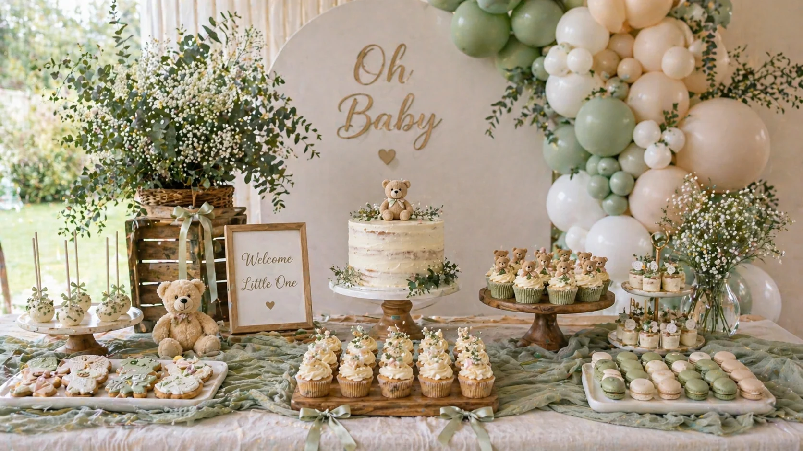
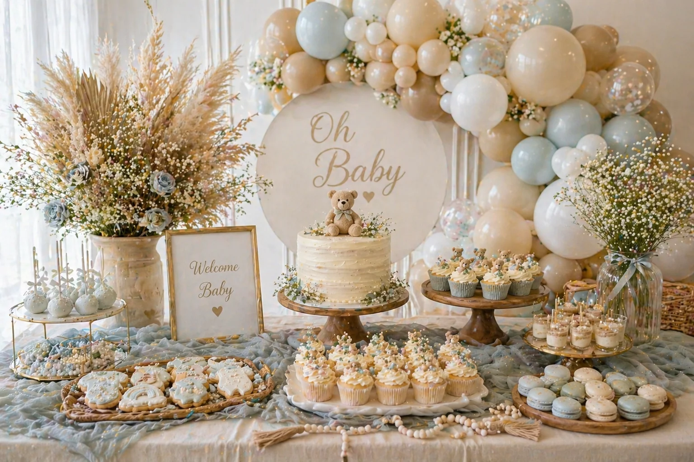

A beautifully styled dessert table can bring a whole baby shower together. It creates a clear focal point for the room, gives guests something lovely to gather around, and is almost always one of the most photographed moments of the celebration. When the balloons, cake, cupcakes and flowers all speak the same colour language, the effect is genuinely special.
At Little Moment Studio, our focus is baby shower balloon styling and celebration setups. We do not make cakes or cupcakes ourselves, but we work alongside dessert tables at every event we style and know what makes them sing. This guide is focused on inspiration — themes, colour palettes and sweet treat ideas you can use when planning your baby shower table.
For a step-by-step guide to arranging the table itself, see our full dessert table styling guide. If you would like cupcakes or a cake to complement your balloon display, we are happy to recommend a trusted local cake maker.
Why Baby Shower Dessert Tables Work So Well
A dessert table gives the celebration a clear visual anchor. Everything — the balloons, the backdrop, the cake, the cupcakes, the florals — is drawn together into one coordinated moment. It creates a natural gathering point for guests and a beautiful backdrop for photographs of the mum-to-be.
The best tables feel soft, coordinated and personal rather than overcrowded. A well-chosen colour palette, repeated consistently across every element, does more for the overall look than any amount of extra decoration.
| Element | What It Adds |
|---|---|
| Balloon garland | Frames the table, repeats the colour palette, creates height |
| Backdrop | Creates a photo-ready setting behind the table |
| Cake | Main visual centrepiece |
| Cupcakes | Easy portions, colourful detail, easy to colour-match |
| Cake pops | Adds height and variety |
| Cookies | Carries the baby shower theme in small shapes |
| Macarons | Elegant, easy to colour-match |
| Flowers | Softens the display and adds organic texture |
| Sweet jars | Adds colour, texture and fill |
| Teddy bear details | Sweet and timeless baby shower theme anchor |
Choosing Your Colour Palette
Choosing a colour palette before anything else makes every other decision much easier. Once you know your colours, you can share them with your balloon stylist, cake maker and florist so every element coordinates naturally.
Blush & Champagne
Blush pink, ivory, champagne, gold. Feminine, warm and luxury without bright colour.
Sage Green Neutral
Sage, ivory, beige, soft gold. Timeless, gender-neutral and beautifully photogenic.
Teddy Bear Neutral
Cream, beige, soft brown, ivory. Warm and gentle — a classic baby shower look.
Baby Blue Cloud
Baby blue, white, pearl, silver. Clean, fresh and calm with a classic feel.
Neutral Boho
Sand, cream, sage, dried florals. Relaxed, warm and very current.
Pink Bow
Soft pink, ivory, pearl white, champagne. Sweet, delicate and very current.
Luxury Gold & Pearl
Ivory, pearl white, champagne, soft gold. Elegant and grown-up, ideal for venues.
Floral
Blush, ivory, soft green, rose pink. Soft and romantic, perfect for spring and summer.
The key to a coordinated table
Choose your palette first and share it with everyone involved — balloon stylist, cake maker, florist. You do not need perfect matching across every element. Repeating the same colour family gently across the display is what makes the table feel connected rather than assembled from separate decisions.
Idea 1: Blush, Ivory & Champagne
A blush, ivory and champagne table is one of the most popular looks for baby showers — and with good reason. It photographs beautifully in any lighting, works well with florals, bows and gold details, and feels genuinely luxurious without relying on strong colour.
This palette works especially well with blush pink and ivory balloon garlands, champagne or gold chrome balloon accents, white cake stands, pearl sprinkles, soft roses and satin bows. Good cupcake ideas include ivory buttercream with pink bow toppers, blush rosettes and pearl sprinkle finishes.
This is a strong choice if you want the table to feel feminine and warm without using very bright or saturated colours. It also suits both venue celebrations and home setups equally well.
Blush, ivory and champagne baby shower dessert table styled by Little Moment Studio, Sittingbourne
Idea 2: Sage Green Teddy Bear
A sage green and teddy bear table is soft, neutral and completely timeless. It works beautifully for gender-neutral baby showers and pairs naturally with wooden stands, eucalyptus, dried florals and natural textures.
This look works well with sage green, ivory and beige balloons, a teddy bear cake topper, semi-naked cake, wooden cake stands, sage green cupcake cases, neutral macarons and baby grow cookies. The combination of greenery, linen and organic textures gives the table an elevated, editorial feel without being formal.

Sage green and ivory baby shower dessert table with teddy bear styling and natural textures
Idea 3: Baby Blue Cloud & Star
A baby blue and white table gives a clean, classic baby shower look. It works especially well with cloud, moon and star details and suits both home and venue setups.
Good elements for this theme include baby blue, white and pearl balloons; cloud-shaped cookies; moon and star cake toppers; white cake with blue detail or a blue drip; blue and white buttercream swirls on cupcakes; silver sprinkles; white florals; and clear cake stands. The palette is light, fresh and calm — ideal if you want something that feels gentle rather than bold.
| Treat | Baby Blue Cloud Idea |
|---|---|
| Cake | White cake with blue drip or star fondant details |
| Cupcakes | Blue and white buttercream swirls |
| Cookies | Clouds, moons, stars, baby grows |
| Cake pops | White and pale blue with silver sprinkles |
| Macarons | Pale blue and white |
| Sweet jars | White marshmallows or pale blue sweets |
Idea 4: Neutral Boho
A neutral boho baby shower table is warm, relaxed and very stylish. It works beautifully with dried florals, pampas grass and soft beige tones — the kind of table that looks like it belongs in an interiors magazine rather than a party supply catalogue.
Good elements include beige, cream and ivory balloons with pampas grass and dried florals worked into the garland; wooden cake stands; linen fabric; semi-naked cake; neutral cupcakes; caramel or ivory macarons; and rattan baskets or woven trays. Soft gold details add warmth without making the look feel shiny or formal.

Neutral boho baby shower dessert table with dried florals and natural textures
Idea 5: Pink Bow
A pink bow baby shower table is sweet, delicate and very current. Bows work across every element of the table — cake topper, cupcake fondant details, cookies, ribbons on cake stands — making it one of the most cohesive and easy-to-execute themes.
Good cupcake ideas for this theme include ivory buttercream with a pink fondant bow topper, blush pink rosettes, pearl sprinkle cupcakes, soft pink and white two-tone swirls, and mini bow fondant cupcakes. For more cupcake ideas, see our full guide to baby shower cupcake designs.
Idea 6: Luxury Gold & Pearl
A gold and pearl baby shower table feels elegant and more grown-up than most. It works well for venue celebrations, afternoon tea formats and larger gatherings where the overall aesthetic skews refined rather than playful.
Key elements include pearl white and champagne balloons with gold chrome accents, an ivory cake with gold leaf or pearl detail, pearl sprinkle cupcakes, white roses, glass cake stands and gold trays. Macarons with gold lustre dust add a particularly premium touch. The golden rule with this palette is restraint — use gold as an accent, not the base colour, and the result feels genuinely luxurious rather than overpowering.
Idea 7: Floral
A floral baby shower table is ideal for spring and summer celebrations. It can range from soft and romantic (blush, ivory, pale green) to brighter and garden-inspired (sage, peach, cream, white) depending on the season and the mum-to-be’s style.
Fresh or artificial flowers can be worked through the balloon garland as well as arranged on the table itself. Good sweet treat ideas include floral buttercream cupcakes, rose-decorated cake, edible flower details and floral-shaped cookies. The more the florals echo between the balloon display and the table, the more cohesive the whole setup feels.
What to Include on the Table
A simple but strong baby shower dessert table does not need to be complicated. One cake, twelve to twenty-four cupcakes, cake pops, cookies and macarons or sweet jars is usually enough for most baby showers. The goal is a table that looks generous and beautiful without feeling chaotic.
| Treat | Why It Works for Baby Showers |
|---|---|
| Cake | The visual centrepiece — carries the theme |
| Cupcakes | Easy to serve, easy to colour-match |
| Cookies | Baby grows, clouds, bears and bows carry the theme in small detail |
| Cake pops | Add height and are easy for guests to take |
| Macarons | Elegant, easy to colour-match, photograph well |
| Sweet jars | Fill the table and add colour and texture |
| Meringues | Pretty, light and delicate |
| Mini desserts | Look premium in small cups or jars |
Baby Shower Cupcake Ideas
Cupcakes are one of the easiest ways to bring the colour palette onto the table in a detailed, personal way. The buttercream colour, piping style and fondant toppers can all be tailored to the theme.
| Cupcake Style | Best For |
|---|---|
| Baby feet fondant cupcakes | Classic baby shower — works with any palette |
| Teddy bear cupcakes | Neutral and teddy bear themes |
| Pink bow cupcakes | Blush or coquette-style showers |
| Sage green cupcakes | Neutral and botanical themes |
| Cloud cupcakes | Baby blue or moon-and-stars themes |
| Pearl cupcakes | Luxury neutral and gold tables |
| Floral cupcakes | Garden or spring baby showers |
| Two-tone buttercream swirls | Matching balloon colour palettes exactly |
For detailed designs and piping techniques, see our guides to baby shower cupcake ideas and fondant cupcake ideas for baby showers.
Matching Balloons, Cake & Cupcakes by Theme
The easiest way to make the whole setup feel coordinated is to choose one theme and carry the same colours across the balloons and the treats. The cupcakes do not need to match the balloons exactly — they just need to repeat the same colour family so the table feels connected.
| Theme | Balloon Colours | Cake & Cupcake Ideas |
|---|---|---|
| Blush baby shower | Blush, ivory, champagne | Pink bow cake, ivory cupcakes, pearl sprinkles |
| Sage teddy bear | Sage, ivory, beige | Teddy bear cake, sage cupcakes, neutral cookies |
| Baby blue cloud | Baby blue, white, pearl | Cloud cake, blue cupcakes, moon and star cookies |
| Neutral boho | Beige, cream, ivory | Semi-naked cake, neutral cupcakes, dried florals |
| Luxury gold | Champagne, pearl, ivory | Gold-accented cake, pearl cupcakes, macarons |
| Floral shower | Blush, ivory, soft green | Floral cake, flower cupcakes, rose details |
“Share your balloon colour palette with your cake maker before they design the cake. When the two teams are working from the same reference, the result always looks intentional.”
Baby Shower Balloon Ideas for Dessert Tables
The balloon display should frame the table and support the colour palette rather than compete with it. The most popular approach is an organic balloon garland mounted behind the table as a backdrop, or draped along the wall above it.
- A circular backdrop with garland framing works well for photos
- A garland sweeping down one side of the table creates a natural, flowing look
- Soft balloon clusters with dried florals worked through the balloons suit boho and neutral themes
- Champagne and gold chrome balloon accents elevate a luxury gold table
- Pearl white balloons suit ivory and neutral setups without adding colour
For more balloon ideas, see our full guide to baby shower balloon ideas, or visit our baby shower balloon styling page to see packages and availability.
What to Ask Your Cake Maker
Once you have chosen the balloon colours and dessert table theme, sharing that information with your cake maker before they begin designing makes a significant difference to the finished result. Here are the most useful things to ask:
- Can the cake colours match the balloon palette?
- Can the cupcakes match the cake design?
- Can they make fondant toppers — teddy bears, bows, baby feet, clouds?
- Can they also make cookies, cake pops or macarons?
- What size cake is right for the number of guests?
- Will the cake be delivered or collected, and when?
- How should the cake and cupcakes be stored before the event?
- Are any decorations non-edible or supported by wires or sticks?
At Little Moment Studio, we are happy to recommend a trusted local cake maker if you would like the cake and cupcakes to complement your balloon display. Get in touch and we can point you in the right direction.
Planning the Table Layout
Once you have chosen your theme, palette and treats, the next step is deciding how to arrange everything. Height variation, balance and negative space are the three things that make the most difference between a table that looks assembled and one that looks styled.
We cover the layout side in detail in our full guide: how to style a dessert table for a children’s party. The principles apply equally well to baby showers — cake stands at different heights, tallest items at the back, smaller treats at the front, and the colour repeated gently across every element.
For local venue ideas to host your baby shower, see our guide to the best baby shower venues near Sittingbourne.
Planning a Baby Shower in Kent?
We design and install beautiful baby shower balloon displays across Sittingbourne and Kent. Free consultation, no obligation. We can also recommend a trusted local cake maker to complete the setup.